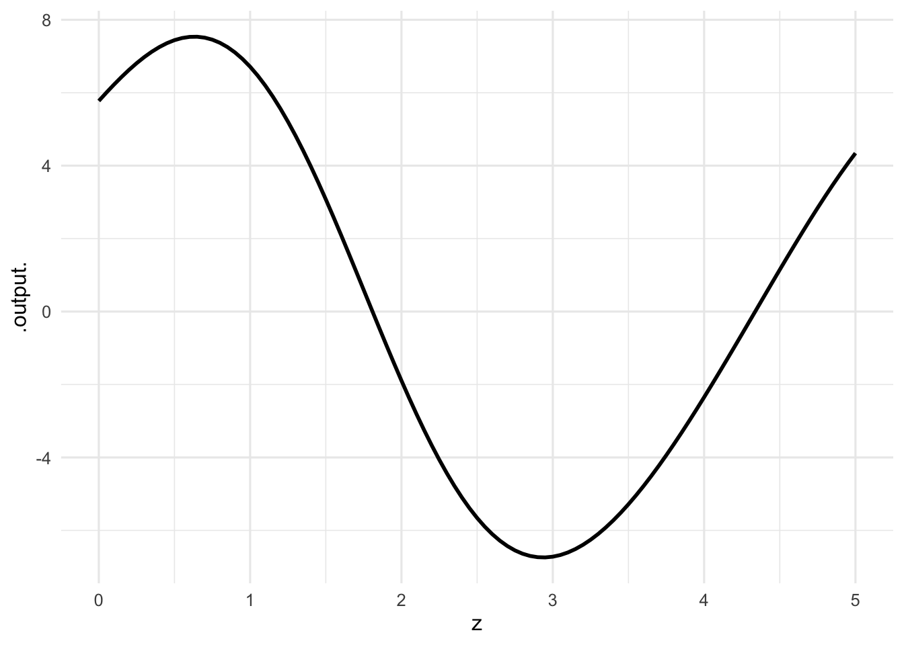
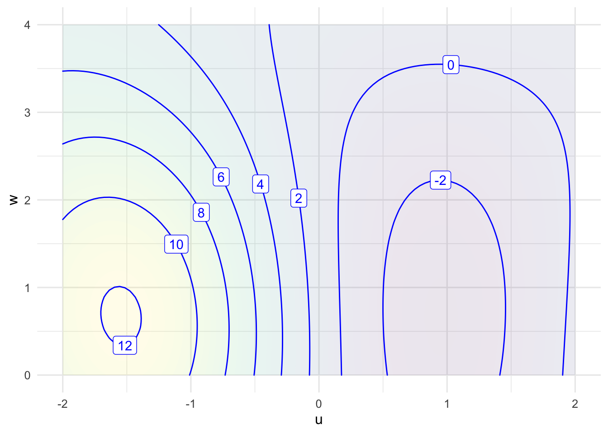
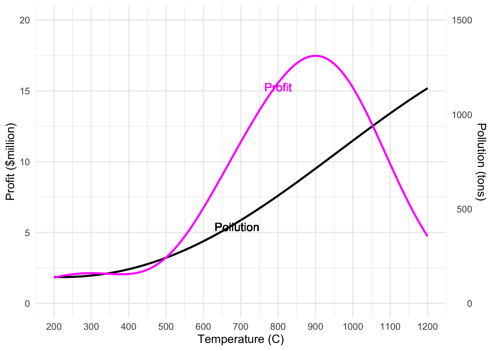

Quantitative Argumentation
Chapter 10 Drill Questions
No answers yet collected
Note1.
Exercise 1

- Which of the following choices are closest to the argmin of the function displayed in the graph?
- Which is closest to the maximum of the function?
- Which is closest to the argmax of the function?
2.
Exercise 2

- Which of the following is closest to the minimum of the function?
D10-gbc-1
- Which of the following is closest to the argmax of the function?
D10-gbc-2
- Which of the following is closest to the argmin of the function?
D10-gbc-3
3.
Exercise 3 The two graphs below show two imagined competing objective functions. One represents pollution from a factory as a function of the chemical processing temperature, the other represents the profit, which also depends on the chemical processing temperature.
pollution <- doodle_fun( ~ temp, seed = 123)
profit <- doodle_fun( ~ temp, seed = 456)
slice_plot(15+pollution((temp-500)/600) ~ temp,
domain(temp = 200:1200), label_text="Pollution", label_x= 0.5) |>
slice_plot(profit(20*(((300 + temp))/2500)-8) ~ temp, color="magenta", label_text="Profit", label_x = 0.6) |>
gf_refine(
scale_x_continuous(limits=c(200,1200),
breaks=seq(200,1200,100)),
scale_y_continuous(limits = c(0, 20),
name = "Profit ($million)",
sec.axis = sec_axis(~. * 75 , name="Pollution (tons)")) )|>
gf_theme(theme_minimal(base_size=12)) |>
gf_labs(x = "Temperature (C)") 
- Which temperature gives the highest profit?
D10-OIK-i
- What is the technical name for that highest-profit temperature?
D10-OIK-ii
- What is the technical name for the highest profit?
D10-OIK-iii
- What is the level of pollution when the profit is maximized? (Pick the closest.)
D10-OIK-iv
- If the only concern were profit, the factory would operate at 900 C. By operating at a somewhat lower temperature, say 700 C, the profit would be reduced but pollution would also be lower.
The change in profit moving from 900 C to 700 C is about negative $6 million. What’s the change in pollution when for the move from 900 C to 700 C?
D10-OIK-v
- Moving from 900 C to 700 C effectively pays $6 million for a pollution reduction of 400 tons. What’s the shadow price for lowering pollution?
D10-OIK-vi